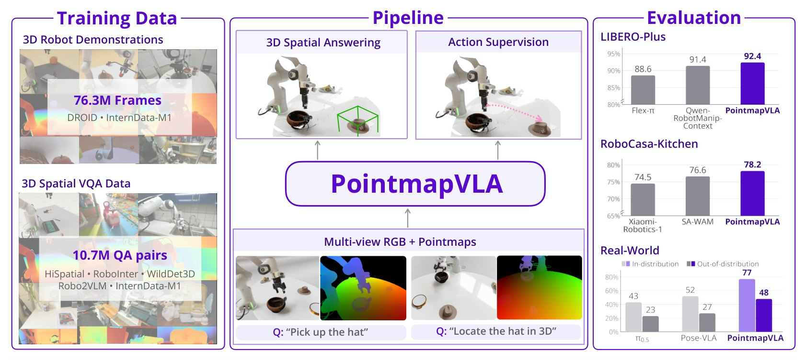
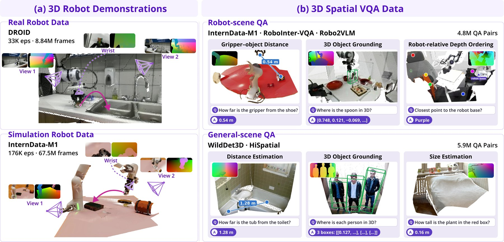
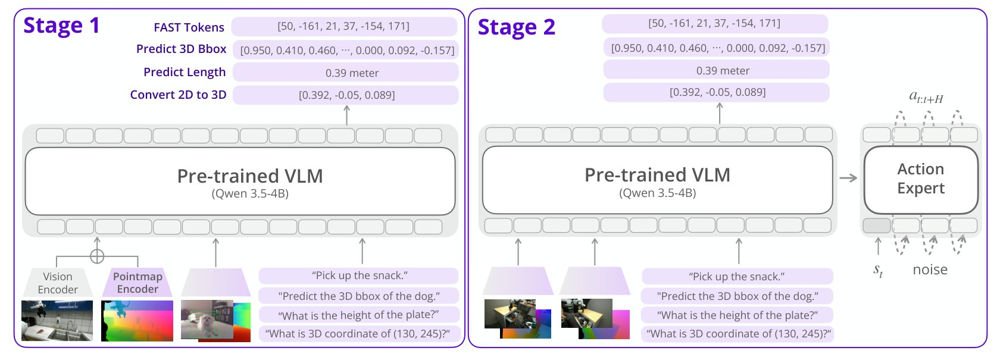
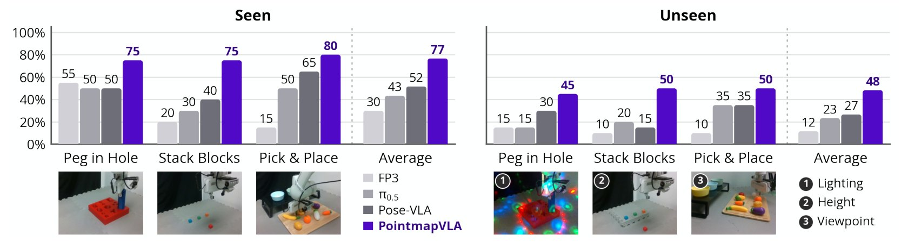

Scaling Robot Learning with Robot-Centric Pointmaps
TL;DR PointmapVLA combines robot-base frame pointmaps with 3D spatial VQA training to improve robot manipulation. It reaches 99.0% on LIBERO, 92.4% on LIBERO-Plus, and 78.2% on RoboCasa, outperforming strong WAM and VLA baselines on LIBERO-Plus and RoboCasa, and improves real-world success.

RGB-based VLAs predict 3D robot actions from camera images, so they must infer the scene’s metric geometry while learning to act. PointmapVLA pairs RGB observations with pointmaps in the robot-base frame to provide explicit 3D geometry. Each pointmap maps image pixels to 3D positions, linking visual appearance to robot-relative geometry and giving all cameras a shared spatial reference.
3D geometry must be inferred
From RGB observations
Loading the recorded episode…
3D geometry is provided
Through robot-base frame pointmapsHover over the pointmap to explore
Loading the recorded episode…
Both players replay the same recorded RoboCasa episode on one timeline. Left: the scene is light grey because the VLA never receives its 3D geometry. Right: the pointmaps provide it in robot-base coordinates. Action chunks are schematic; robot motion is replayed from the demonstration.
RGB images and pointmaps are encoded separately; the pointmap encoder starts from the RGB encoder's weights.
Both share one patch grid, so the two features of each patch are added into a single token: it carries what the patch shows and where it is in 3D, relative to the robot.
The model receives as many visual tokens as with RGB alone; together with the instruction, they condition action-chunk prediction.
# per view: 8×8 = 64 tokens
rgb = rgb_encoder(rgb_image) # (64, d)
pm = pointmap_encoder(pointmap) # (64, d)
tok = rgb + pm # token-wiseSimplified from our implementation: 256×256 inputs, 16×16 patches merged 2×2; d = backbone width.
The figure uses a 4×4 grid for illustration.
Take any pixel. Its RGB value says what the surface looks like; the same pixel in the pointmap stores where that surface is: its XYZ position in metres, relative to the robot base. Because every camera uses the same robot-base frame, the same physical point carries the same coordinates in every view. Pick a pixel below and see where it lands in the scene.
Each camera gives an RGB image and a metric depth image. Using the camera intrinsics, every pixel's depth is lifted to an XYZ point in that camera's frame. The camera extrinsics then move those points into the robot-base frame.
The result keeps the image layout: pixel (u, v) of the pointmap holds the 3D point seen at pixel (u, v) of the RGB image, and every camera's pointmap shares the same robot-base frame.
# 1 RGB image (H, W, 3) — appearance only# 2 + depth (H, W), metres from the camerax = (u + 0.5 - cx) / fx * depth # 3 + intrinsics Ky = (v + 0.5 - cy) / fy * depthp_cam = stack([x, y, depth]) # camera framep_base = p_cam @ R.T + t # 4 + extrinsics → robot baseSimplified from our data pipeline (pixel centres, OpenCV pinhole); invalid depth → 0.
Loading the depth-to-pointmap visualization…
Providing pointmaps introduces a new input representation to an RGB-pretrained VLM. With robot demonstrations alone, the model must learn to interpret this representation through action supervision.
We add pointmap-conditioned 3D spatial VQA to supervise geometric understanding directly. Questions ask the model to locate objects in 3D, estimate metric distances, and reason about spatial relationships.
Our training corpus pairs pointmaps with 76.3 million robot demonstration frames and 10.7 million 3D spatial VQA examples, bringing action prediction and spatial understanding into joint training.

Training samples shown as the model sees them: each camera's RGB image with its pointmap, and every pixel placed in one 3D frame. Drag to orbit, scroll to zoom, right-drag to pan.
PointmapVLA follows a two-stage training process.

The vision-language backbone learns from two kinds of examples at once: spatial questions answered from the pointmaps, and robot actions written as discrete tokens. Both are predicted as text, so a single next-token loss trains them together.
A flow-matching action expert is attached to the backbone and trained with it to output smooth, continuous action chunks. The Stage 1 losses stay on, so the model keeps practising spatial reasoning while it learns precise control.
PointmapVLA achieves strong performance across standard manipulation tasks, perturbed environments, and kitchen tasks requiring precise spatial interactions.
PointmapVLA achieves the highest success rates on LIBERO-Plus and RoboCasa. LIBERO-Plus is evaluated using the LIBERO-fine-tuned checkpoint without additional fine-tuning.
| Method | LIBERO | LIBERO-Plus |
|---|---|---|
| WAMs | ||
| Cosmos-Policy | 98.5 | 82.2 |
| ABot-M0.5 | 99.4 | 83.4 |
| VLAs | ||
| InternVLA-A1.5 | 98.9 | 84.8 |
| Qwen-RobotManip | 99.1 | 89.0 |
| Qwen-RobotManip-Context | 99.2 | 91.4 |
| Geometry-aware WAMs | ||
| GAM | 97.6 | 85.5 |
| GIFT-WAM-IDM | 98.5 | 87.8 |
| Flex-π | 98.5 | 88.6 |
| Geometry-aware VLAs | ||
| Spatial Forcing | 98.5 | 29.1 |
| ABot-M0 | 98.6 | 80.5 |
| PointmapVLA (Ours) | 99.0±0.1 | 92.4±0.3 |
| Method | Success (%) |
|---|---|
| WAMs | |
| UWM | 60.8 |
| DreamZero | 62.4 |
| Cosmos Policy | 67.1 |
| VLAs | |
| RLDX-1 | 70.6 |
| Xiaomi-Robotics-1 | 74.5 |
| Geometry-aware WAMs | |
| GAM | 69.4 |
| DeVA | 72.0 |
| SA-WAM | 76.6 |
| Geometry-aware VLAs | |
| GeoPredict | 52.4 |
| SeeR-VLA | 61.5 |
| PointmapVLA (Ours) | 78.2±0.9 |
Success rates (%), mean ± std over three evaluation runs for PointmapVLA (paper Tables 1 and 2). Best, second best.
| Method | Spatial | Object | Goal | Long | Avg. |
|---|---|---|---|---|---|
| WAMs | |||||
| GE-Act | 98.2 | 97.6 | 95.8 | 94.4 | 96.5 |
| Fast-WAM | 98.2 | 100.0 | 97.0 | 95.2 | 97.6 |
| ImageWAM | 97.2 | 99.2 | 98.8 | 98.4 | 98.4 |
| Cosmos-Policy | 98.1 | 100.0 | 98.2 | 97.6 | 98.5 |
| ABot-M0.5 | 100.0 | 99.8 | 99.4 | 98.4 | 99.4 |
| VLAs | |||||
| OpenVLA | 84.7 | 88.4 | 79.2 | 53.7 | 76.5 |
| π0-FAST | 96.4 | 96.8 | 88.6 | 60.2 | 85.5 |
| π0 | 98.0 | 96.8 | 94.4 | 88.4 | 94.4 |
| UniVLA | 96.5 | 96.8 | 95.6 | 92.0 | 95.2 |
| π0.5 | 98.8 | 98.2 | 98.0 | 92.4 | 96.9 |
| GR00T N1.6 | 97.7 | 98.5 | 97.5 | 94.4 | 97.0 |
| OpenVLA-OFT | 97.6 | 98.4 | 97.9 | 94.5 | 97.1 |
| RIPT-VLA | 98.6 | 98.6 | 99.0 | 93.8 | 97.5 |
| RLDX-1 | 98.0 | 99.3 | 98.4 | 95.3 | 97.8 |
| X-VLA | 98.2 | 98.6 | 97.8 | 97.6 | 98.1 |
| ACoT-VLA | 98.6 | 99.0 | 99.4 | 97.0 | 98.5 |
| InternVLA-A1.5 | 98.6 | 99.8 | 98.6 | 98.4 | 98.9 |
| Qwen-RobotManip | – | – | – | – | 99.1 |
| Qwen-RobotManip-Ctx | – | – | – | – | 99.2 |
| Geometry-aware WAMs | |||||
| GAM | 98.6 | 99.6 | 97.4 | 94.6 | 97.6 |
| GIFT-WAM-IDM | 99.0 | 100.0 | 98.6 | 96.4 | 98.5 |
| SG-WAM | 99.4 | 99.4 | 98.2 | 97.8 | 98.7 |
| Flex-π | 99.6 | 99.8 | 98.6 | 96.0 | 98.5 |
| Flex-π* | 99.2 | 99.8 | 99.0 | 98.6 | 99.2 |
| Geometry-aware VLAs | |||||
| Evo-Depth | 95.6 | 99.2 | 95.6 | 91.3 | 95.4 |
| HoloBrain-0-GD | 97.8 | 98.2 | 95.2 | 95.6 | 96.7 |
| GIFT-VLA | 99.0 | 99.2 | 98.4 | 94.8 | 97.9 |
| Spatial Forcing | 99.4 | 99.6 | 98.8 | 96.0 | 98.5 |
| ABot-M0 | 98.8 | 99.8 | 99.0 | 96.6 | 98.6 |
| PointmapVLA (Ours) | 99.4 | 99.5 | 99.3 | 97.9 | 99.0 |
Success rates (%) per suite (paper Table 9).
| Method | Camera | Robot | Lang. | Light | Backgr. | Noise | Layout | Total |
|---|---|---|---|---|---|---|---|---|
| WAMs | ||||||||
| Fast-WAM | 16.4 | 44.5 | 68.9 | 78.2 | 53.7 | 37.7 | 60.7 | 51.5 |
| VLA-JEPA | 63.3 | 67.1 | 85.4 | 95.6 | 93.6 | 66.3 | 85.1 | 79.5 |
| Cosmos-Policy | 75.8 | 63.3 | 81.7 | 96.5 | 88.9 | 92.7 | 82.2 | 82.2 |
| ImageWAM | 80.8 | 50.3 | 91.4 | 98.1 | 85.5 | 93.8 | 80.5 | 83.1 |
| ABot-M0.5 | 70.5 | 87.4 | 88.6 | 94.0 | 89.7 | 75.5 | 85.2 | 83.4 |
| VLAs | ||||||||
| OpenVLA | 0.8 | 3.5 | 23.0 | 8.1 | 34.8 | 15.2 | 28.5 | 15.6 |
| UniVLA | 1.8 | 46.2 | 69.6 | 69.0 | 81.0 | 21.2 | 31.9 | 42.9 |
| π0 | 13.8 | 6.0 | 58.8 | 85.0 | 81.4 | 79.0 | 68.9 | 53.6 |
| π0-FAST | 65.1 | 21.6 | 61.0 | 73.2 | 73.2 | 74.4 | 68.8 | 61.6 |
| RIPT-VLA | 55.2 | 31.2 | 77.6 | 88.4 | 91.6 | 73.5 | 74.2 | 68.4 |
| OpenVLA-OFT | 56.4 | 31.9 | 79.5 | 88.7 | 93.3 | 75.8 | 74.2 | 69.6 |
| π0.5 | 78.4 | 73.6 | 80.8 | 96.2 | 94.1 | 89.0 | 84.5 | 84.4 |
| InternVLA-A1.5 | 83.1 | 55.1 | 86.9 | 96.4 | 98.2 | 95.6 | 85.2 | 84.8 |
| ACoT-VLA | 72.6 | 82.6 | 87.5 | 97.7 | 96.5 | 87.8 | 88.1 | 86.6 |
| RLDX-1 | 75.0 | 91.8 | 92.2 | 97.1 | 95.5 | 80.3 | 80.7 | 86.7 |
| Qwen-RobotManip | 87.2 | 75.5 | 85.6 | 96.6 | 97.7 | 97.7 | 87.3 | 89.0 |
| Qwen-RobotManip-Ctx | 89.9 | 83.9 | 86.5 | 98.6 | 99.9 | 97.9 | 87.5 | 91.4 |
| Geometry-aware WAMs | ||||||||
| SG-WAM | 54.8 | 78.3 | 81.7 | 96.5 | 88.9 | 90.7 | 85.3 | 81.3 |
| GAM | 83.1 | 70.0 | 84.8 | 97.2 | 94.3 | 95.3 | 79.1 | 85.5 |
| GIFT-WAM-IDM | 78.7 | 80.5 | 90.2 | 99.0 | 89.2 | 97.2 | 83.3 | 87.8 |
| Flex-π | 89.1 | 72.7 | 84.5 | 94.6 | 96.3 | 98.9 | 87.3 | 88.6 |
| Geometry-aware VLAs | ||||||||
| Spatial Forcing | 20.1 | 13.4 | 40.9 | 29.1 | 33.4 | 25.7 | 39.3 | 29.1 |
| Evo-Depth | 47.2 | 49.2 | 78.9 | 88.1 | 76.4 | 77.6 | 69.6 | 69.6 |
| HoloBrain-0-GD | 65.5 | 58.2 | 78.7 | 88.1 | 90.3 | 66.9 | 79.5 | 74.0 |
| GIFT-VLA | 57.7 | 63.7 | 88.6 | 98.5 | 96.9 | 82.5 | 80.3 | 79.6 |
| ABot-M0 | 60.4 | 67.9 | 86.4 | 96.2 | 91.6 | 86.4 | 82.6 | 80.5 |
| PointmapVLA (Ours) | 88.0 | 83.7 | 92.6 | 99.0 | 98.8 | 99.3 | 88.9 | 92.4 |
Zero-shot success rates (%) per perturbation type (paper Table 10), with the LIBERO-fine-tuned checkpoint and no additional fine-tuning.
| Method | Avg. success (%) |
|---|---|
| VLAs | |
| π0.5 | 62.1 |
| π0 | 62.5 |
| π0-FAST | 63.6 |
| GR00T N1.5 | 64.1 |
| GR00T N1.6 | 66.2 |
| RLDX-1 | 70.6 |
| Xiaomi-Robotics-1 | 74.5 |
| WAMs | |
| UVA | 50.0 |
| UWM | 60.8 |
| DreamZero | 62.4 |
| Cosmos Policy | 67.1 |
| World2Act | 72.6 |
| Geometry-aware WAMs | |
| GAM | 69.4 |
| DeVA | 72.0 |
| SA-WAM | 76.6 |
| X-WAM† | 79.2 |
| Geometry-aware VLAs | |
| GeoPredict | 52.4 |
| SeeR-VLA | 61.5 |
| PointmapVLA (Ours) | 78.2 |
| Task | Success (%) |
|---|---|
| CloseDoubleDoor | 96.7±1.2 |
| CloseDrawer | 97.3±1.2 |
| CloseSingleDoor | 100.0±0.0 |
| CoffeePressButton | 92.7±1.2 |
| CoffeeServeMug | 85.3±4.2 |
| CoffeeSetupMug | 46.0±2.0 |
| OpenDoubleDoor | 68.0±2.0 |
| OpenDrawer | 93.3±1.2 |
| OpenSingleDoor | 78.7±3.1 |
| PnPCabToCounter | 65.3±3.1 |
| PnPCounterToCab | 66.7±1.2 |
| PnPCounterToMicrowave | 40.0±7.2 |
| PnPCounterToSink | 81.3±2.3 |
| PnPCounterToStove | 80.7±6.1 |
| PnPMicrowaveToCounter | 44.0±3.5 |
| PnPSinkToCounter | 84.7±5.0 |
| PnPStoveToCounter | 79.3±1.2 |
| TurnOffMicrowave | 100.0±0.0 |
| TurnOffSinkFaucet | 94.7±1.2 |
| TurnOffStove | 40.7±8.3 |
| TurnOnMicrowave | 88.7±2.3 |
| TurnOnSinkFaucet | 83.3±1.2 |
| TurnOnStove | 80.7±5.0 |
| TurnSinkSpout | 88.0±2.0 |
| Average | 78.2±0.9 |
Average success (%) over the 24 atomic kitchen tasks, 300 demonstrations per task (paper Tables 11 and 12; right: PointmapVLA per task, mean ± std over three evaluation runs). †X-WAM uses RoboCasa data during pretraining and is not directly comparable.
Successful evaluation episodes of the paper checkpoints. Pick a benchmark and a task.
Rollout videos are being prepared.
We evaluate three tasks: peg insertion, block stacking, and spatially instructed pick-and-place. Unseen conditions introduce changing illumination, new target heights, and a new external camera viewpoint, respectively.
PointmapVLA achieves 77% average success under seen conditions and 48% under unseen conditions, compared with 52% and 27% for Pose-VLA, the strongest baseline on average. PointmapVLA performs best on each task under both conditions.

Clips are qualitative examples, not the success-rate sample; playback is real time (1×). Baseline clips may come from a different evaluation case of the same task and condition when no recording of the same case exists.
We also test pick-and-place while physically blocking external cameras.
Asked for the target’s 3D box, PointmapVLA (purple) keeps producing one from the remaining views; Pose-VLA (orange) gives no box from an occluded camera. Pick an object and an occlusion setting; drag to rotate, scroll to zoom.
Robot-base coordinates improve manipulation. Robot-base pointmaps reach 73.6% on RoboCasa, above camera-frame pointmaps (71.2%) and RGB alone (67.9%).
| Input | SR (%) |
|---|---|
| None (RGB-only) | 67.9±0.1 |
| Depth | 70.0±0.6 |
| Depth + ray | 70.9±0.3 |
| Pointmap (camera) | 71.2±0.9 |
| Pointmap (robot base) | 73.6±0.3 |
Paper Table 6 · RoboCasa success rates (%)
Depth and depth-plus-ray inputs also improve over RGB, but stay below robot-base pointmaps.
Encoder initialization matters. Initializing the pointmap encoder from the VLM’s pretrained RGB encoder performs best among the tested designs.
| Encoder | Pretrained | RGB | Pointmap |
|---|---|---|---|
| SigLIP2 | ✓ | 65.3±1.1 | 70.2±0.6 |
| DINOv3 | ✓ | 66.8±0.6 | 70.8±0.7 |
| MoGe-3 | ✓ | 68.3±0.6 | 69.8±0.5 |
| Linear embed. | × | – | 66.6±0.5 |
| Qwen3.5 | × | – | 63.0±0.4 |
| Qwen3.5 (Ours) | ✓ | – | 73.6±0.3 |
Paper Table 5 · RoboCasa success rates (%); RGB / Pointmap = what the encoder is fed
With identical auxiliary encoders, pointmap inputs also beat additional RGB inputs. These input and encoder comparisons use direct downstream fine-tuning without PointmapVLA pretraining.
Spatial supervision complements action supervision. Robot-only pretraining already helps; adding 3D spatial VQA raises success further in every evaluated setting.
| Pretrain | Simulation | Real world | ||
|---|---|---|---|---|
| RoboCasa | LIBERO-Plus | Seen | Unseen | |
| None | 73.6±0.3 | 82.6±0.1 | – | – |
| Robot | 76.4±0.1 | 88.2±0.9 | 70 | 38 |
| Robot + VQA | 78.2±0.9 | 92.4±0.3 | 77 | 48 |
Paper Table 7 · success rates (%) across pretraining strategies
With 100 demonstrations per task, PointmapVLA reaches 76.5% on RoboCasa, above the RGB-only variant with 300 (71.6%).
Both variants start from the same pointmap-pretrained checkpoint and share the fine-tuning schedule; the RGB-only variant removes pointmaps during fine-tuning and evaluation.
TBD